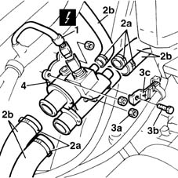

1088C30 thermostat unit - r+r
- Path
- Procedures > 10 ENGINE UNIT > 1088 ENGINE COOLING > 1088C water pump and thermostat > 1088C30 thermostat unit - r+r
- Kind
- repair procedure (removal / refitting; the operation number is the code)
- Applies to
- engines: 1.6 16v; all production periods
- Interactive page
- https://sloeber94.github.io/elrnDB-fMltpl/en/#/2891330
Applies to: engines: 1.6 16v; all production periods
 Removing
Removing
 Refitting
RefittingOpen the bonnet lid.
1. Disconnect the electrical connection from the engine coolant temperature sensor.
 | Name | Connector |
|---|---|---|
1 | Engine coolant temperature sensor |
Position a suitable container for recovering the coolant fluid.
2. Remove collars (2a) and disconnect coolant hoses (2b). Then drain the coolant into the container.
3. Unscrew nuts (3a) securing the thermostat to to the cylinder head. Unscrew bolt (3b) and release wiring bracket (3c) from the thermostat.
4. Remove the thermostat from the engine bay.

Applies to: engines: 1.6 16v; all production periods
Refitting
RemovingCheck the condition of the thermostat.
Thoroughly clean the thermostat and cylinder head mating surfaces.
Change the thermostat gasket.
Fit the thermostat and secure with bolts.
 | Fastening | Component | Ø | Value (daNm) |
|---|---|---|---|---|
- | Nut | THERMOSTAT | M8 | 2.5 |
Fit the wiring bracket and secure with bolts.
Connect the coolant hoses using new collars.
Connect the sensor electrical connection.
- 1088A10 Engine COOLANT - Check density' and top up level, if necessary